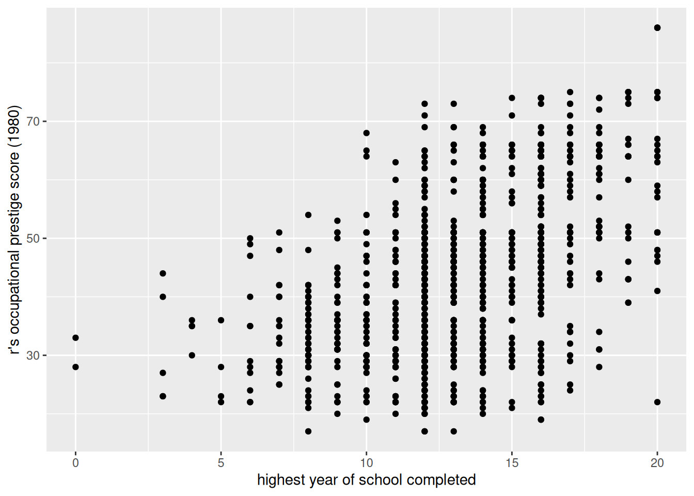
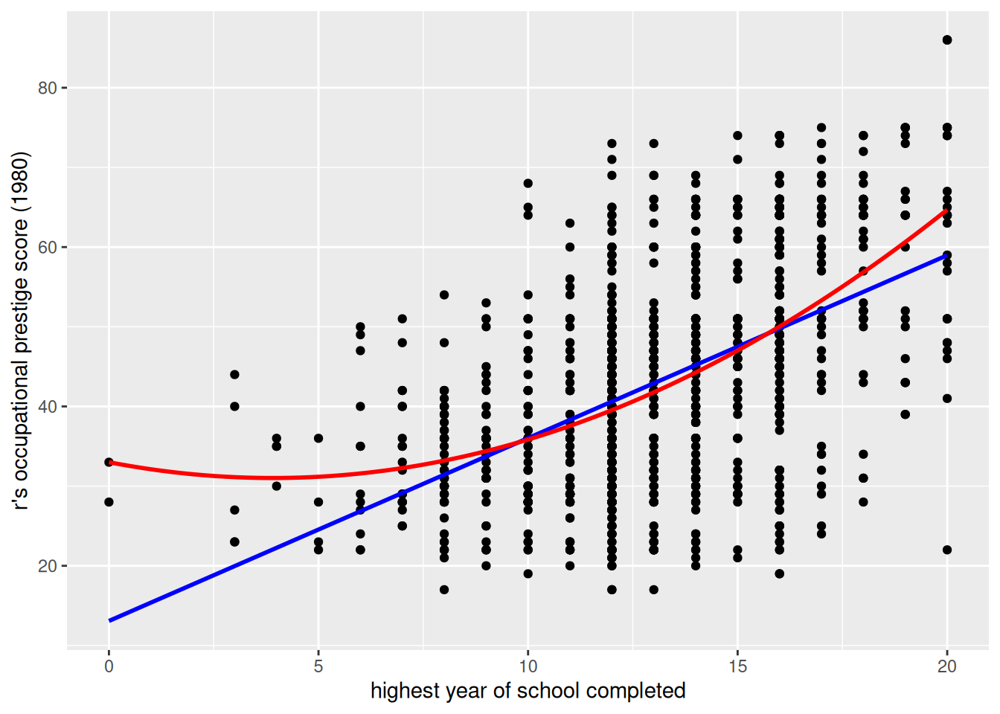
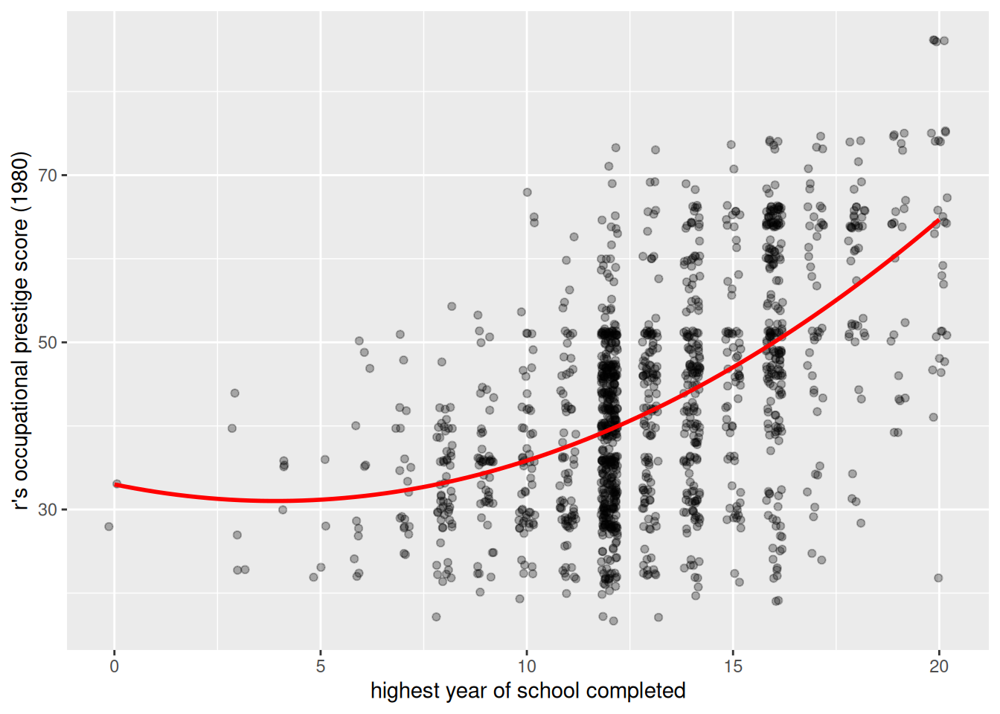
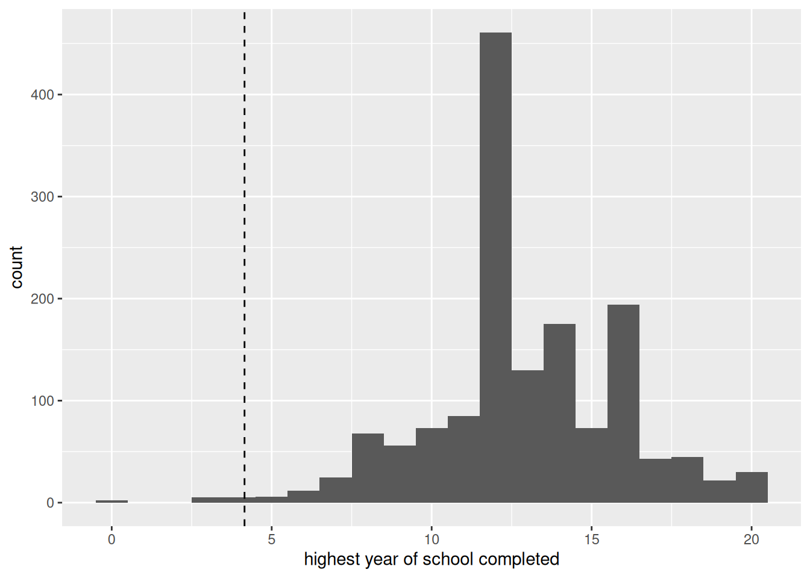

Use the dataset sesam. We predict postnumb (a post-test score) from age and prenumb (a pre-test score).
Fit a regression of postnumb on age and prenumb. Interpret each coefficient, the intercept, and the adjusted \(R^2\). Is age a significant predictor once prenumb is controlled for?
Compare this result to a simple regression of postnumb on age alone (from the previous chapter). Why can a predictor be significantly related to the outcome in a simple regression, yet not contribute in a multiple regression?
Fit a regression of postnumb on prenumb alone. Compare the coefficient for prenumb and the \(R^2\) to the model that also includes age. What do you conclude?
Donations, religion, and income
Use the dataset donations. Treat the “miscellaneous” category of religion as missing, and exclude the corresponding observations from the analyses below (it is too heterogeneous a group to interpret meaningfully).
Test whether average donations differ between religious groups, controlling for income (inc). Fit a regression of donation on religion (as a factor) and inc. Is the overall F-test for the model significant? Which categories differ significantly from the reference category?
Is there a difference in average donation between two specific religious categories that are not both compared to the reference category in the previous output? Use emmeans() for pairwise comparisons between all categories, or refit the model with a different reference category, to answer this.
Yearly donations appear to have been recorded in thousands. Construct a new variable propdon, the proportion of monthly income donated: divide donation (converted to a monthly amount) by monthly income. Report the mean and standard deviation of propdon. What do these values tell you?
Excluding the miscellaneous religion category permanently from the dataset, fit a regression of propdon on religion and obtain post-hoc pairwise comparisons between all categories. Between which categories is there no evidence of a difference?
Use percdon (percentage of income donated) as outcome. Fit a regression on inc alone, and then on inc together with religion. Is there evidence that donations increase with income, even after controlling for religion? Interpret the size of the effect.
Fit a regression of percdon on male, religion, and their interaction. Is there evidence that the effect of religion on donations differs between men and women?
Fit a regression of percdon on inc, religion, and their interaction. Is there evidence that the effect of income on donations varies between religious denominations?
Construct the product of age and lifevent (an indicator for having experienced a serious health problem). Fit a regression of percdon on age, lifevent, and their interaction (both by explicitly creating the product term, and using formula syntax). Is there evidence that the effect of lifevent on donations is larger for older people than for younger people?
Fit a regression of percdon on age, inc, and their interaction. Is there evidence that the effect of income on donations varies with age?
Fit a regression of percdon on male, inc, and their interaction. Is there evidence that the effect of income on donations differs between men and women?
Fit a regression of percdon on male, inc, religion, and all their two-way and three-way interactions. Is there evidence that gender differences in the effect of income on donations vary by religion?
Occupational prestige and education
Use the dataset gss91_extended. We study the relationship between years of education (educ) and occupational prestige (prestg80).
Make a scatterplot of prestg80 against educ. Overlay it with both a linear and a quadratic fitted line. Which fits the data better, based on visual inspection?
Fit a regression model of prestg80 on educ, a squared term for educ, and the control variables race, region, and sex. Is the squared term statistically significant? What do you conclude about the shape of the relationship?
Using the coefficients for educ and educ\(^2\), compute the turning point of the curve: the value of educ at which expected prestige is at its minimum or maximum. Is the curve U-shaped or inverted-U shaped? Check how many observations in the data actually fall at or below this turning point, and discuss whether the turning point should be interpreted, or whether it is more appropriate to describe the relationship only over the range where most of the data lie.
Answers
Make sure this file is in the same R Project as the data folder. Use relative file paths, not full paths to your computer.
library(tidyverse)
── Attaching core tidyverse packages ──────────────────────── tidyverse 2.0.0 ──
✔ dplyr 1.2.1 ✔ readr 2.2.0
✔ forcats 1.0.1 ✔ stringr 1.6.0
✔ ggplot2 4.0.3 ✔ tibble 3.3.1
✔ lubridate 1.9.5 ✔ tidyr 1.3.2
✔ purrr 1.2.2
── Conflicts ────────────────────────────────────────── tidyverse_conflicts() ──
✖ dplyr::filter() masks stats::filter()
✖ dplyr::lag() masks stats::lag()
ℹ Use the conflicted package (<http://conflicted.r-lib.org/>) to force all conflicts to become errors
library(haven)library(emmeans)
Welcome to emmeans.
Caution: You lose important information if you filter this package's results.
See '? untidy'
fit_multi <-lm(postnumb ~ age + prenumb, data = sesam)summary(fit_multi)
Call:
lm(formula = postnumb ~ age + prenumb, data = sesam)
Residuals:
Min 1Q Median 3Q Max
-38.130 -6.456 -0.456 5.435 22.568
Coefficients:
Estimate Std. Error t value Pr(>|t|)
(Intercept) 7.4242 5.1854 1.432 0.154
age 0.1225 0.1084 1.131 0.259
prenumb 0.7809 0.0637 12.259 <2e-16 ***
---
Signif. codes: 0 '***' 0.001 '**' 0.01 '*' 0.05 '.' 0.1 ' ' 1
Residual standard error: 9.486 on 237 degrees of freedom
Multiple R-squared: 0.4592, Adjusted R-squared: 0.4547
F-statistic: 100.6 on 2 and 237 DF, p-value: < 2.2e-16
# Adj. R-squared = 0.45## E(postnumb) = 7.42 + 0.12 age + 0.78 prenumb (SE_age = 0.11, SE_prenumb = 0.06)## Age does not contribute in predicting postnumb (not significant). The# marginal correlation between age and postnumb is significant, but here# the effect of age is conditional on that of prenumb: once you control# for prenumb, age does not matter.# If pretest score goes up by 1, posttest score significantly goes up by# 0.78, irrespective of age.# People aged 0 with a pretest score of 0 have a posttest score of 7.42;# interpreting the constant is not meaningful here.# The F-test p-value is 0.000, so not all coefficients are 0 (R-squared# is significant). 45% of the variation in the post-test is explained by# the pre-test and age.
fit_age_only <-lm(postnumb ~ age, data = sesam)summary(fit_age_only)
Call:
lm(formula = postnumb ~ age, data = sesam)
Residuals:
Min 1Q Median 3Q Max
-33.873 -9.409 -0.818 9.904 27.287
Coefficients:
Estimate Std. Error t value Pr(>|t|)
(Intercept) -5.8837 6.4681 -0.910 0.364
age 0.6975 0.1246 5.597 5.98e-08 ***
---
Signif. codes: 0 '***' 0.001 '**' 0.01 '*' 0.05 '.' 0.1 ' ' 1
Residual standard error: 12.1 on 238 degrees of freedom
Multiple R-squared: 0.1163, Adjusted R-squared: 0.1126
F-statistic: 31.33 on 1 and 238 DF, p-value: 5.979e-08
# In the simple regression, age is significantly related to postnumb.# This is because age is correlated with prenumb; once prenumb is added# to the model, the (partial) effect of age drops out. A predictor can be# marginally related to Y through its association with other predictors,# without having an independent (partial) effect once those predictors# are controlled for.
The correlation between the two predictors is what drives this.
sesam |>summarise(r_age_prenumb =cor(age, prenumb, use ="complete.obs"))
# A tibble: 1 × 1
r_age_prenumb
<dbl>
1 0.433
# older children score higher on the pre-test, which is why age looks# informative until the pre-test is in the model
fit_prenumb_only <-lm(postnumb ~ prenumb, data = sesam)summary(fit_prenumb_only)
Call:
lm(formula = postnumb ~ prenumb, data = sesam)
Residuals:
Min 1Q Median 3Q Max
-39.253 -6.283 -0.394 5.796 22.170
Coefficients:
Estimate Std. Error t value Pr(>|t|)
(Intercept) 13.08508 1.34795 9.707 <2e-16 ***
prenumb 0.81208 0.05746 14.133 <2e-16 ***
---
Signif. codes: 0 '***' 0.001 '**' 0.01 '*' 0.05 '.' 0.1 ' ' 1
Residual standard error: 9.492 on 238 degrees of freedom
Multiple R-squared: 0.4563, Adjusted R-squared: 0.454
F-statistic: 199.7 on 1 and 238 DF, p-value: < 2.2e-16
# Very little has changed compared to the model with both predictors:# the coefficient for prenumb and R-squared are almost the same with or# without age in the model. This confirms that age adds essentially# nothing once prenumb is controlled for.
A formal test of whether adding age improves the model.
anova(fit_prenumb_only, fit_multi)
Analysis of Variance Table
Model 1: postnumb ~ prenumb
Model 2: postnumb ~ age + prenumb
Res.Df RSS Df Sum of Sq F Pr(>F)
1 238 21442
2 237 21327 1 115.01 1.278 0.2594
# comparing nested models: a non-significant F confirms that age adds# nothing beyond prenumb
Donations, religion, and income
2. Donations by religion, controlling for income
table(donations$religion, useNA ="ifany")
1 2 3 4 5 6
222 118 89 65 31 19
# check the codes before excluding the miscellaneous category
fit_rel <-lm(donation ~ religion + inc, data = donations)summary(fit_rel)
Call:
lm(formula = donation ~ religion + inc, data = donations)
Residuals:
Min 1Q Median 3Q Max
-2.5167 -0.7217 -0.2464 0.3815 3.9845
Coefficients:
Estimate Std. Error t value Pr(>|t|)
(Intercept) -1.52013 0.22139 -6.866 1.89e-11 ***
religion2 0.57641 0.12882 4.474 9.42e-06 ***
religion3 0.48154 0.14253 3.379 0.000783 ***
religion4 1.92051 0.15966 12.029 < 2e-16 ***
religion5 -0.03782 0.21675 -0.174 0.861553
inc 0.46106 0.04638 9.941 < 2e-16 ***
---
Signif. codes: 0 '***' 0.001 '**' 0.01 '*' 0.05 '.' 0.1 ' ' 1
Residual standard error: 1.13 on 519 degrees of freedom
Multiple R-squared: 0.3398, Adjusted R-squared: 0.3334
F-statistic: 53.42 on 5 and 519 DF, p-value: < 2.2e-16
# There are differences in the average donations of the various religious# groups. The null hypothesis that R-squared = 0 (p-value of the F-test)# is rejected. From the coefficients we learn that there are significant# differences in average donations between catholics and the reference# category (none), between reformed and none, and between rereformed and# none. There is no evidence of a difference in average donation between# islam and none.
The individual t-tests answer a different question from the joint test of whether religion matters at all.
anova(fit_rel)
Analysis of Variance Table
Response: donation
Df Sum Sq Mean Sq F value Pr(>F)
religion 4 214.97 53.742 42.065 < 2.2e-16 ***
inc 1 126.26 126.258 98.824 < 2.2e-16 ***
Residuals 519 663.08 1.278
---
Signif. codes: 0 '***' 0.001 '**' 0.01 '*' 0.05 '.' 0.1 ' ' 1
# the F-test for religion tests all its dummy variables simultaneously
# Pairwise comparisons show whether specific pairs of categories differ# significantly, not just each category versus the reference category.# Alternatively, releveling the factor to "reformed" as reference and# refitting the model gives the same information for that specific# comparison:donations <- donations |>mutate(religion =relevel(religion, ref ="3"))fit_rel_releveled <-lm(donation ~ religion + inc, data = donations)summary(fit_rel_releveled)
Call:
lm(formula = donation ~ religion + inc, data = donations)
Residuals:
Min 1Q Median 3Q Max
-2.5167 -0.7217 -0.2464 0.3815 3.9845
Coefficients:
Estimate Std. Error t value Pr(>|t|)
(Intercept) -1.03859 0.25248 -4.114 4.53e-05 ***
religion1 -0.48154 0.14253 -3.379 0.000783 ***
religion2 0.09486 0.15969 0.594 0.552737
religion4 1.43897 0.18450 7.799 3.44e-14 ***
religion5 -0.51936 0.23642 -2.197 0.028477 *
inc 0.46106 0.04638 9.941 < 2e-16 ***
---
Signif. codes: 0 '***' 0.001 '**' 0.01 '*' 0.05 '.' 0.1 ' ' 1
Residual standard error: 1.13 on 519 degrees of freedom
Multiple R-squared: 0.3398, Adjusted R-squared: 0.3334
F-statistic: 53.42 on 5 and 519 DF, p-value: < 2.2e-16
# reset back to the original reference category for later usedonations <- donations |>mutate(religion =relevel(religion, ref ="1"))
Note that emmeans() adjusts for multiple testing by default (Tukey), while releveling and reading off a t-test does not. With several categories the two can disagree on borderline comparisons; the adjusted comparison is the safer one to report.
4. Proportion of income donated
donations <- donations |>mutate(propdon = ((donation *1000) /12) / (inc *1000),percdon = propdon *100 )# propdon is the proportion of monthly income donated# percdon is the same quantity expressed as a percentagedonations |>summarise(mean_propdon =mean(propdon, na.rm =TRUE),sd_propdon =sd(propdon, na.rm =TRUE) )
# Yearly donations have been recorded in thousands, hence# the *1000 conversion. The mean propdon = 0.0177, and the sd = 0.02235.# The mean proportion of monthly income donated is about 0.02. The sd is# relatively large compared to the mean.
The two factors of 1000 cancel, so the expression simplifies. Writing it out in full is nevertheless clearer about what is being converted.
# No significant differences are found between islam and none, and# between catholics and reformed (the confidence interval for these# pairwise differences includes 0).
6. Percentage donated and income
fit_percdon_inc <-lm(percdon ~ inc, data = donations)summary(fit_percdon_inc)
Call:
lm(formula = percdon ~ inc, data = donations)
Residuals:
Min 1Q Median 3Q Max
-2.9115 -1.4701 -0.9063 1.0830 6.7566
Coefficients:
Estimate Std. Error t value Pr(>|t|)
(Intercept) -0.45791 0.41287 -1.109 0.268
inc 0.48606 0.08854 5.490 6.29e-08 ***
---
Signif. codes: 0 '***' 0.001 '**' 0.01 '*' 0.05 '.' 0.1 ' ' 1
Residual standard error: 2.176 on 523 degrees of freedom
Multiple R-squared: 0.05448, Adjusted R-squared: 0.05268
F-statistic: 30.14 on 1 and 523 DF, p-value: 6.287e-08
fit_percdon_full <-lm(percdon ~ inc + religion, data = donations)summary(fit_percdon_full)
Call:
lm(formula = percdon ~ inc + religion, data = donations)
Residuals:
Min 1Q Median 3Q Max
-4.0982 -1.1259 -0.5486 0.6462 5.6252
Coefficients:
Estimate Std. Error t value Pr(>|t|)
(Intercept) -1.00917 0.36850 -2.739 0.00638 **
inc 0.42372 0.07720 5.489 6.35e-08 ***
religion3 0.99187 0.23724 4.181 3.41e-05 ***
religion2 1.05776 0.21443 4.933 1.09e-06 ***
religion4 3.48148 0.26575 13.100 < 2e-16 ***
religion5 -0.04735 0.36079 -0.131 0.89564
---
Signif. codes: 0 '***' 0.001 '**' 0.01 '*' 0.05 '.' 0.1 ' ' 1
Residual standard error: 1.881 on 519 degrees of freedom
Multiple R-squared: 0.2987, Adjusted R-squared: 0.292
F-statistic: 44.22 on 5 and 519 DF, p-value: < 2.2e-16
# There is evidence that donations increase with income, even controlling# for religion (b = 0.424, t = 5.49, p < 0.001). For each unit (1000)# increase in monthly income, the percentage of income donated increases# by about 0.4 percentage points.
Note what this coefficient says: richer people donate a larger share of their income, not merely a larger amount. That is a substantively stronger claim than a positive effect on donation would be.
# A tibble: 2 × 3
model b_inc adj_r2
<chr> <dbl> <dbl>
1 inc only 0.486 0.0527
2 inc + religion 0.424 0.292
# the income effect barely changes when religion is added, so religion does# not confound the income effect
7. Does the religion effect differ by gender?
fit_male_rel <-lm(percdon ~ male * religion, data = donations)summary(fit_male_rel)
Call:
lm(formula = percdon ~ male * religion, data = donations)
Residuals:
Min 1Q Median 3Q Max
-4.2468 -1.1292 -0.6108 0.7241 6.1761
Coefficients:
Estimate Std. Error t value Pr(>|t|)
(Intercept) 0.6386 0.1839 3.473 0.000559 ***
male 0.5001 0.2589 1.931 0.053973 .
religion3 1.2866 0.3268 3.938 9.36e-05 ***
religion2 1.3554 0.2888 4.693 3.46e-06 ***
religion4 3.3962 0.3828 8.871 < 2e-16 ***
religion5 0.1505 0.5027 0.299 0.764808
male:religion3 -0.2943 0.4877 -0.603 0.546516
male:religion2 -0.7146 0.4507 -1.586 0.113459
male:religion4 0.3515 0.5441 0.646 0.518496
male:religion5 -0.4559 0.7427 -0.614 0.539577
---
Signif. codes: 0 '***' 0.001 '**' 0.01 '*' 0.05 '.' 0.1 ' ' 1
Residual standard error: 1.929 on 515 degrees of freedom
Multiple R-squared: 0.2687, Adjusted R-squared: 0.2559
F-statistic: 21.02 on 9 and 515 DF, p-value: < 2.2e-16
# There is no evidence that the effect of religion on donations differs# for men and women (the interaction terms are not significant).
With several interaction terms, test them jointly rather than one at a time.
anova(lm(percdon ~ male + religion, data = donations), fit_male_rel)
Analysis of Variance Table
Model 1: percdon ~ male + religion
Model 2: percdon ~ male * religion
Res.Df RSS Df Sum of Sq F Pr(>F)
1 519 1931.0
2 515 1915.9 4 15.067 1.0125 0.4004
# a single F-test for the whole set of interaction terms
8. Does the income effect differ by religion?
fit_inc_rel <-lm(percdon ~ inc * religion, data = donations)summary(fit_inc_rel)
# There is no evidence that the effect of income on donations varies# between the religious denominations (the interaction terms are not# significant).
anova(lm(percdon ~ inc + religion, data = donations), fit_inc_rel)
Analysis of Variance Table
Model 1: percdon ~ inc + religion
Model 2: percdon ~ inc * religion
Res.Df RSS Df Sum of Sq F Pr(>F)
1 519 1837.2
2 515 1826.5 4 10.699 0.7542 0.5555
# joint test of the interaction terms
9. Age and a serious health problem
donations <- donations |>mutate(age_lifevent = age * lifevent)fit_age_life_manual <-lm(percdon ~ age + lifevent + age_lifevent, data = donations)summary(fit_age_life_manual)
Call:
lm(formula = percdon ~ age + lifevent + age_lifevent, data = donations)
Residuals:
Min 1Q Median 3Q Max
-3.2187 -1.2076 -0.7764 0.7013 6.6690
Coefficients:
Estimate Std. Error t value Pr(>|t|)
(Intercept) 0.246096 0.375423 0.656 0.51243
age 0.026517 0.009448 2.807 0.00519 **
lifevent 2.769833 0.965589 2.869 0.00429 **
age_lifevent -0.022696 0.021304 -1.065 0.28722
---
Signif. codes: 0 '***' 0.001 '**' 0.01 '*' 0.05 '.' 0.1 ' ' 1
Residual standard error: 2.062 on 521 degrees of freedom
Multiple R-squared: 0.1543, Adjusted R-squared: 0.1495
F-statistic: 31.69 on 3 and 521 DF, p-value: < 2.2e-16
fit_age_life_formula <-lm(percdon ~ age * lifevent, data = donations)summary(fit_age_life_formula)
Call:
lm(formula = percdon ~ age * lifevent, data = donations)
Residuals:
Min 1Q Median 3Q Max
-3.2187 -1.2076 -0.7764 0.7013 6.6690
Coefficients:
Estimate Std. Error t value Pr(>|t|)
(Intercept) 0.246096 0.375423 0.656 0.51243
age 0.026517 0.009448 2.807 0.00519 **
lifevent 2.769833 0.965589 2.869 0.00429 **
age:lifevent -0.022696 0.021304 -1.065 0.28722
---
Signif. codes: 0 '***' 0.001 '**' 0.01 '*' 0.05 '.' 0.1 ' ' 1
Residual standard error: 2.062 on 521 degrees of freedom
Multiple R-squared: 0.1543, Adjusted R-squared: 0.1495
F-statistic: 31.69 on 3 and 521 DF, p-value: < 2.2e-16
# There is no evidence that the effect of having experienced a serious# health problem on donations is larger for older than for younger# people (the interaction term is not significant).
# the two routes give identical estimates; the formula syntax is just shorter# and cannot go wrong about which main effects to include
10. Does the income effect vary with age?
donations <- donations |>mutate(age_inc = age * inc)fit_age_inc_manual <-lm(percdon ~ age + inc + age_inc, data = donations)summary(fit_age_inc_manual)
Call:
lm(formula = percdon ~ age + inc + age_inc, data = donations)
Residuals:
Min 1Q Median 3Q Max
-2.8320 -1.4759 -0.8774 1.0188 6.6384
Coefficients:
Estimate Std. Error t value Pr(>|t|)
(Intercept) -0.6523412 1.6818557 -0.388 0.698
age 0.0205179 0.0383371 0.535 0.593
inc 0.3312151 0.4081952 0.811 0.417
age_inc 0.0003971 0.0086525 0.046 0.963
Residual standard error: 2.171 on 521 degrees of freedom
Multiple R-squared: 0.06238, Adjusted R-squared: 0.05698
F-statistic: 11.55 on 3 and 521 DF, p-value: 2.42e-07
fit_age_inc_formula <-lm(percdon ~ age * inc, data = donations)summary(fit_age_inc_formula)
Call:
lm(formula = percdon ~ age * inc, data = donations)
Residuals:
Min 1Q Median 3Q Max
-2.8320 -1.4759 -0.8774 1.0188 6.6384
Coefficients:
Estimate Std. Error t value Pr(>|t|)
(Intercept) -0.6523412 1.6818557 -0.388 0.698
age 0.0205179 0.0383371 0.535 0.593
inc 0.3312151 0.4081952 0.811 0.417
age:inc 0.0003971 0.0086525 0.046 0.963
Residual standard error: 2.171 on 521 degrees of freedom
Multiple R-squared: 0.06238, Adjusted R-squared: 0.05698
F-statistic: 11.55 on 3 and 521 DF, p-value: 2.42e-07
# There is no evidence that the effect of monthly income on donations# varies with age (the interaction term is not significant).
In a model with an interaction, the coefficient for inc is the effect of income at age = 0, not an average effect. Centring the predictors makes the main effects interpretable again.
# There is no evidence that possible gender differences in the effect of# monthly income on donations vary with religion (the three-way# interaction terms are not significant).
# a three-way interaction subdivides the data very finely# with small cells, non-significance mainly reflects a lack of power rather# than evidence that no such interaction exists
Occupational prestige and education
13. Linear and quadratic fits
ggplot(gss91, aes(x = educ, y = prestg80)) +geom_point()
Warning: Removed 102 rows containing missing values or values outside the scale range
(`geom_point()`).

ggplot(gss91, aes(x = educ, y = prestg80)) +geom_point() +geom_smooth(method ="lm", formula = y ~ x, se =FALSE, color ="blue") +geom_smooth(method ="lm", formula = y ~poly(x, 2), se =FALSE, color ="red")
Warning: Removed 102 rows containing non-finite outside the scale range
(`stat_smooth()`).
Warning: Removed 102 rows containing non-finite outside the scale range
(`stat_smooth()`).
Warning: Removed 102 rows containing missing values or values outside the scale range
(`geom_point()`).

# The quadratic (red) line explains more variance than the linear (blue)# line: R-squared = 0.291 versus 0.27 for the linear fit. Whether this# difference is significant needs to be tested formally, e.g. through an# interaction of educ with itself (a squared term) in a regression model.
Overplotting hides how many observations sit at each level of education.
ggplot(gss91, aes(x = educ, y = prestg80)) +geom_jitter(width =0.2, alpha =0.3) +geom_smooth(method ="lm", formula = y ~poly(x, 2), se =FALSE, color ="red")
Warning: Removed 102 rows containing non-finite outside the scale range
(`stat_smooth()`).
Warning: Removed 102 rows containing missing values or values outside the scale range
(`geom_point()`).

# jittering and transparency reveal where the data actually are# note how few observations lie at the low end of educ
Call:
lm(formula = prestg80 ~ educ + I(educ^2) + factor(race) + factor(region) +
factor(sex), data = gss91)
Residuals:
Min 1Q Median 3Q Max
-39.056 -7.644 0.021 7.178 32.372
Coefficients:
Estimate Std. Error t value Pr(>|t|)
(Intercept) 34.62120 3.40084 10.180 < 2e-16 ***
educ -1.08111 0.52238 -2.070 0.0387 *
I(educ^2) 0.13022 0.02015 6.464 1.41e-10 ***
factor(race)2 -4.03072 0.91363 -4.412 1.10e-05 ***
factor(race)3 -3.29608 1.72685 -1.909 0.0565 .
factor(region)2 -0.42017 0.71961 -0.584 0.5594
factor(region)3 0.22872 0.70219 0.326 0.7447
factor(sex)2 -0.30483 0.58995 -0.517 0.6054
---
Signif. codes: 0 '***' 0.001 '**' 0.01 '*' 0.05 '.' 0.1 ' ' 1
Residual standard error: 10.94 on 1407 degrees of freedom
(102 observations deleted due to missingness)
Multiple R-squared: 0.3036, Adjusted R-squared: 0.3001
F-statistic: 87.63 on 7 and 1407 DF, p-value: < 2.2e-16
# The educ-squared term is significant (t(1407) = 6.46, p < 0.0001), so# there is evidence of a quadratic relationship, controlling for race,# region, and sex.
# -b[educ] / (2 * b[educ2]) = -(-1.081) / (2 * 0.130) = 4.2## Since b[educ2] > 0, the relation is U-shaped, as suggested by the# scatterplot (though that plot did not include statistical controls).# We conclude that around 4 years of education corresponds to the lowest# predicted prestige.gss91 |>summarise(n_at_or_below =sum(educ <= turning_point, na.rm =TRUE))
# A tibble: 1 × 1
n_at_or_below
<int>
1 12
# Only a small number of subjects have educ values at or below the# turning point (about 12 out of roughly 1500). It is highly unlikely# that prestige is actually higher with 1 or 2 years of education than# with 4 years; the model most plausibly applies for 4 and more years of# education. We therefore abstain from interpreting the turning point# itself, and conclude instead that, over the range where most of the# data lie, prestige increases in education at an increasing rate.
Warning: Removed 7 rows containing non-finite outside the scale range
(`stat_bin()`).

# the dashed line marks the turning point# almost the entire distribution lies to the right of it
The general lesson: a quadratic term is fitted to the whole range of X, but the fit is only trustworthy where the data are dense. A turning point located in a sparse region is an artefact of the functional form you imposed, not a finding about the world.